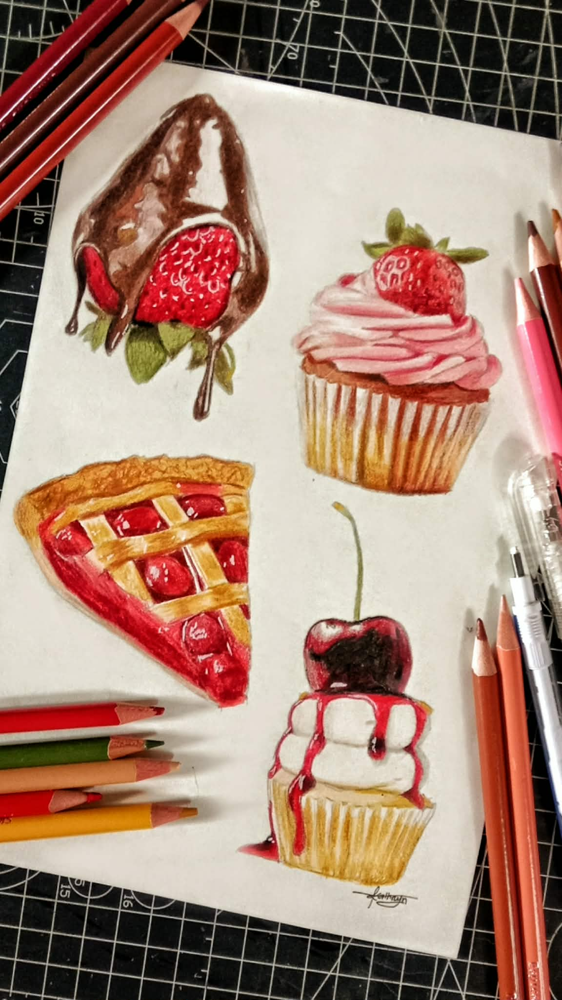
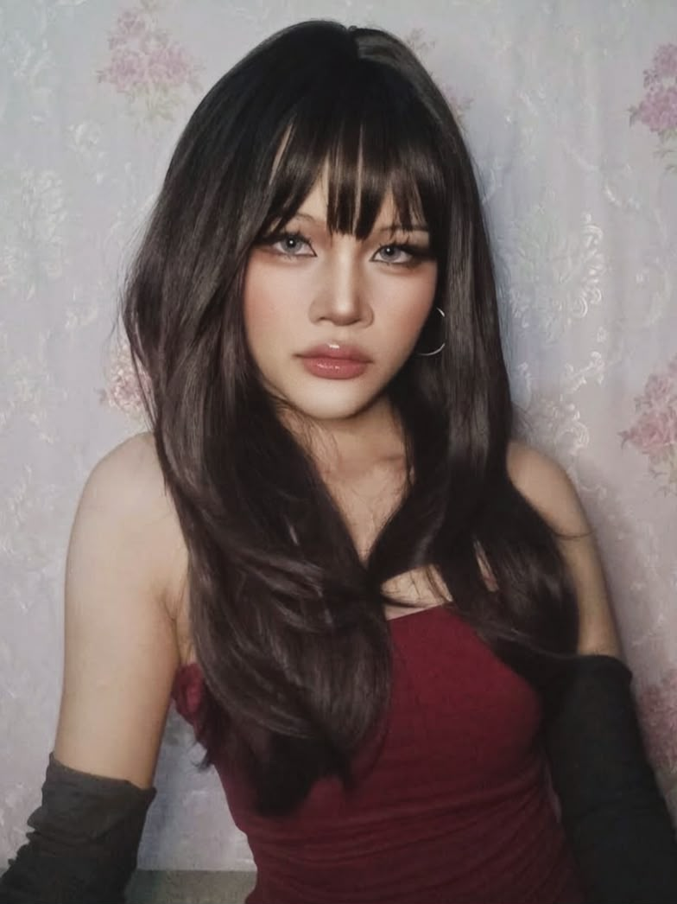
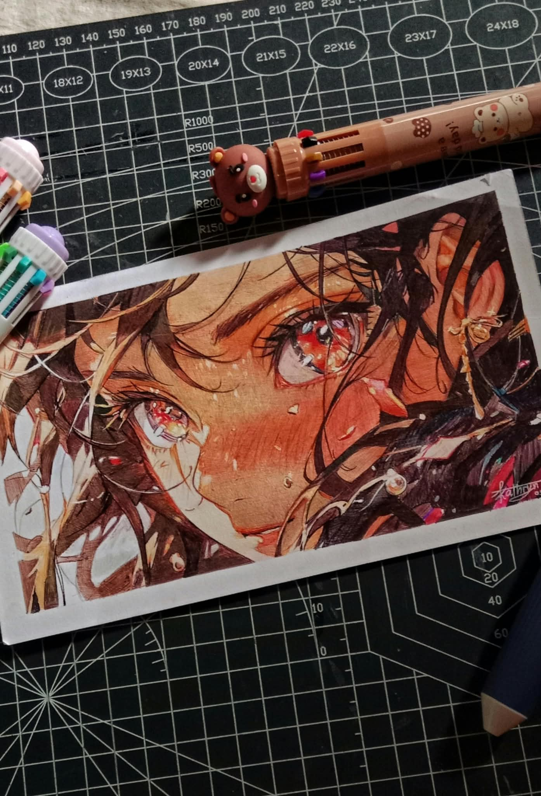
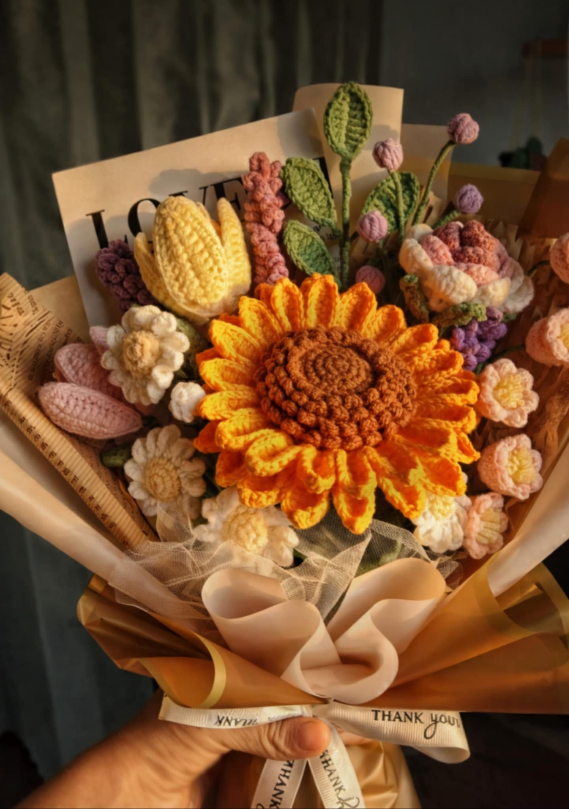

Dessert Studies
A drawing of desserts made with colored pencils, exploring color, shading, and the little details that make each treat look inviting.
KATHRYN VACUNAWA
Dream. Dare. Do.
Hi, I'm Kath — a multimedia studies student, quiet observer, and creative soul who loves turning little ideas into something meaningful.
Explore my work ↗01 / ABOUT ME

I'm Kath, a 20-year-old Bachelor of Arts in Multimedia Studies student from Laguna. I enjoy exploring different ways to express ideas, whether through drawing, digital design, or handmade crafts.
I'm naturally quiet and observant, and I like having the space to learn, experiment, and create at my own pace. This page is a small collection of the things I make and the things that inspire me.
CURRENTLY LEARNING · ALWAYS CREATING02 / SELECTED WORKS
A few creative projects made with curiosity, patience, and a little bit of color.

A drawing of desserts made with colored pencils, exploring color, shading, and the little details that make each treat look inviting.

An anime drawing made with multicolor ballpoint pens, using layered lines and different ink colors to bring the character to life.

Handmade crochet work created stitch by stitch, combining patience, creativity, and the joy of making something by hand.
03 / THINGS I LOVE
04 / SAY HELLO
Thanks for stopping by my little corner of the internet. Feel free to reach out or connect with me.
kvvacunawa@up.edu.ph ↗